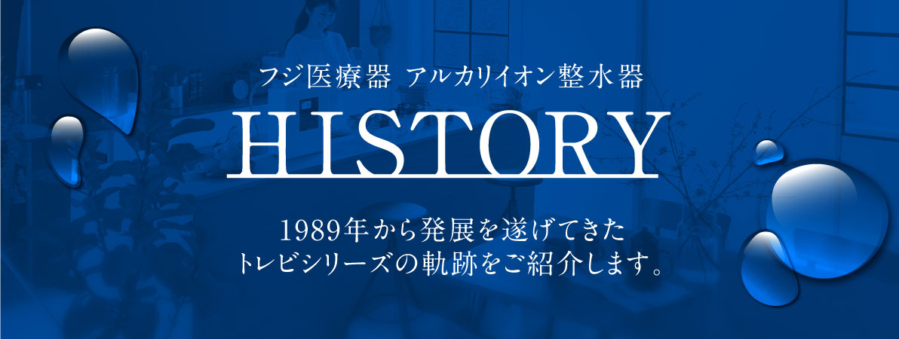
* This site uses "alkaline ionized water (electrolyzed hydrogen water)" and "acidic water" as the names of the generated water. These correspond to "alkaline electrolyzed water" and "acidic electrolyzed water" used in JIS T 2004 (household electrolyzed water generator).
Fuji medical equipment that has been sending alkaline ionized water conditioners * to the world since 1989.
In the form of selling alkaline ionized water devices, we have provided "water" that protects food safety and healthy living.
On this page, we will introduce traditional products that have been supported and loved by our customers.
* Includes household electrolyzed water generator.
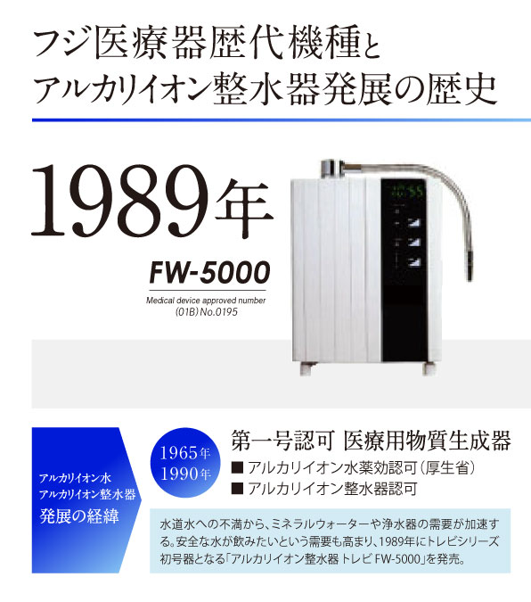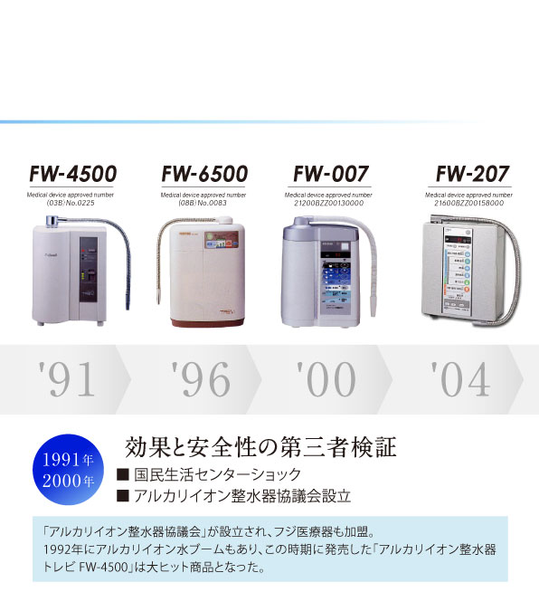
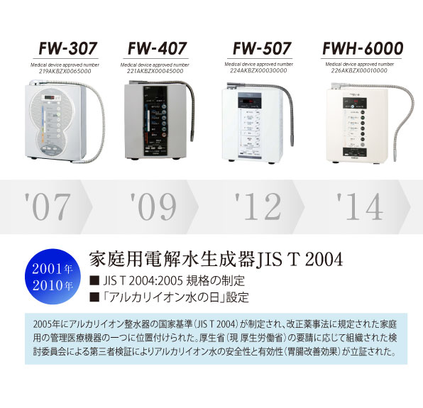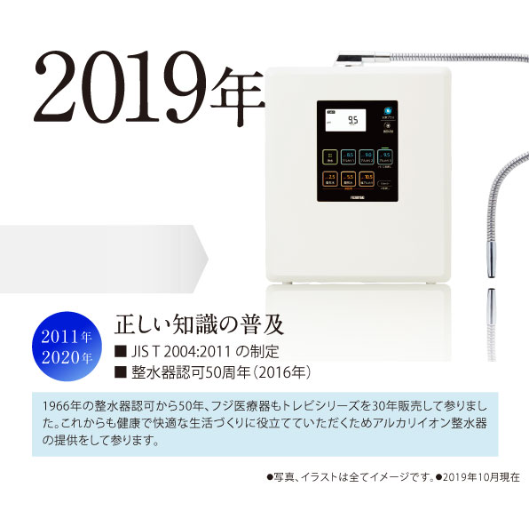
There are 30 models of alkaline ionized water conditioners and electrolytic hydrogen water generators released by Fuji Medical Instruments so far.
We have endeavored to innovate to meet the needs of the times.
We will compare the technological evolution of representative models of Fuji Medical Instruments alkaline ionized water from the viewpoints of power (number of electrodes and maximum amount of treated water), function (selectable water and number of cartridge removal substances), and eco (flow ratio and zero waste water mode). ..
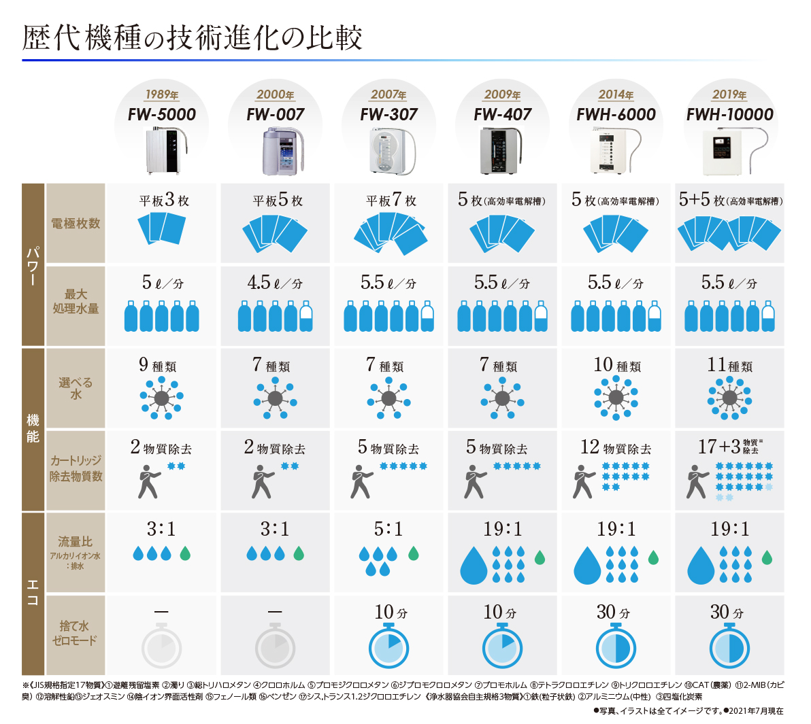
電解槽を改善することにより、高水素濃度の電解水を生成することが可能になりました。
美容や健康といった分野から高い注目を浴びている水素水。
その水素水をご自宅でお手軽にご飲用いただけます。
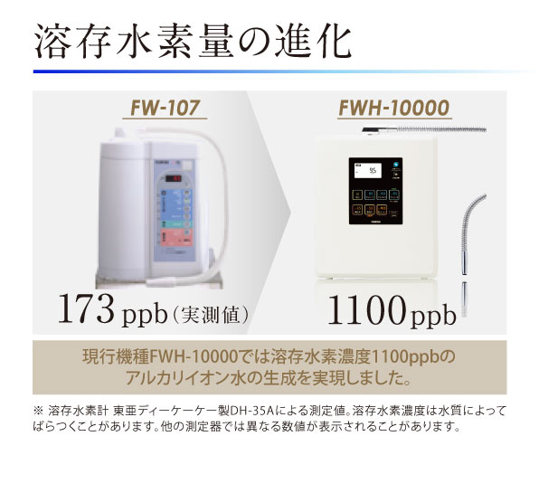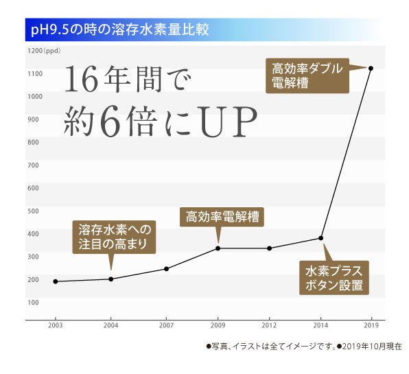
現在では累計販売台数58万台、海外展開実績9カ国。フジ医療器の技術力が日本だけでなく世界中で人々の健やかな暮らしを支えています。
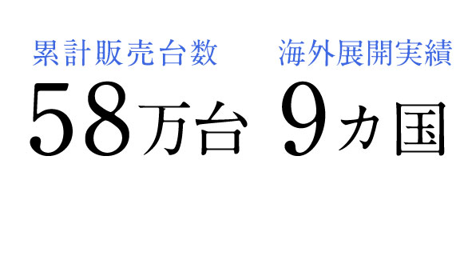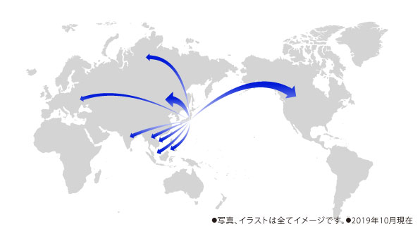
従来の電界槽（５枚電極）に加えて、新型電界槽（5枚電極）を搭載し、さらにパワーアップ。
胃腸症状に効果のあるアルカリイオン水をはじめ、11種類の水を生成することができます。
また、優れたカートリッジ構造で20物質を除去可能です。
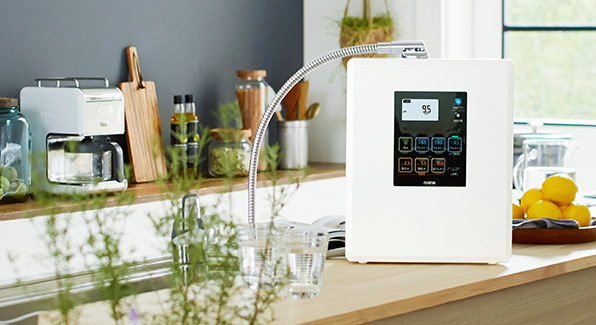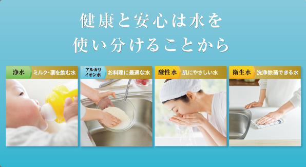
商品に関するお問い合わせ
お問い合わせフォームで入力された情報は、SSLによって暗号化され、お客様の個人情報を保護しています。また、お問い合わせフォームにご記入いただいた個人情報は、当社のプライバシーポリシーに基づき、適切にお取り扱いいたします。